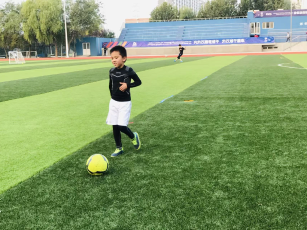

01 / FOOTBALL
Your practice partner.
For classmates who want to play football and need someone to practice with. Let's work on short passes, receiving the ball and simple teamwork.
I play midfield for my school football team. I'd like to share what I learn in training and keep improving with you.
View activity details
What we can do
Start with a warm-up, practice short passes and first touches, then try a simple passing challenge together. We can adjust the practice to your experience.
Suggested session
About 30 minutes, with the time and school pitch availability agreed together beforehand. This is a proposed plan, with no fixed weekly schedule yet.
How to start
Find me at school and say, “I'd like to practice football with you.” Tell me what you want to try and when you're free. We'll confirm a time and place together.
Read about my football experience →